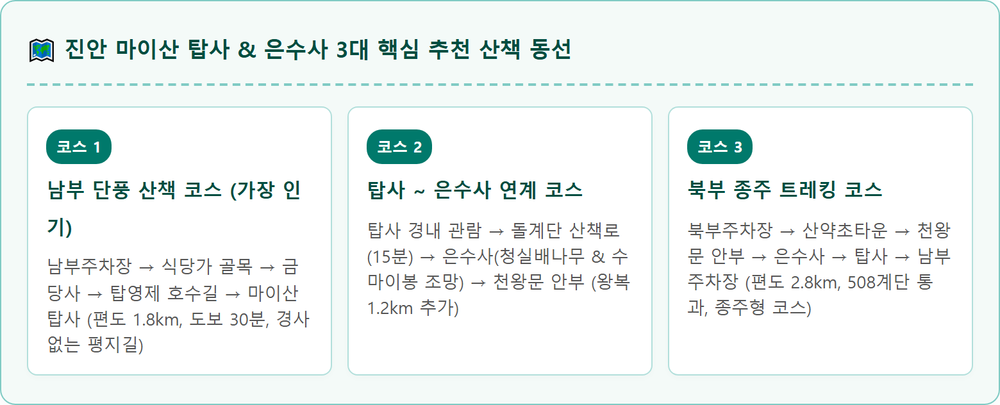

A wide-angle landscape photograph of Maisan Tapsa temple in Jinan, Jeollabuk-do, South Korea, surrounded by brilliant peak autumn colors in late October. In the background, the colossal conglomerate rock dome of Female Maisan peak towers high into the crisp blue sky, covered with unique weathered tafoni caves and honeycombed rock textures. Nestled at the base of the cliff are dozens of miraculous, towering stone pagodas built from raw natural river stones, standing completely intact without mortar. Fiery red Japanese maple trees, bright yellow ginkgo trees, and golden oak foliage frame the peaceful stone pagoda courtyards. Golden autumn sunlight gently illuminates the scene. High detail, realistic texture, cinematic travel photography style, 1:1 aspect ratio.
전북 진안군 진안읍에 자리 잡은 마이산(馬耳山)은 백두대간 노령산맥의 줄기가 빚어낸 천하의 명산이자 국가지정 명승 제12호입니다.
약 1억 년 전 중생대 백악기 호수 바닥에 자갈과 진흙이 퇴적되어 굳어진 수성암 덩어리가 융기하여 형성된 산으로, 동쪽의 수마이봉(680m)과 서쪽의 암마이봉(687.4m)이 나란히 솟아 있어 마치 말의 귀를 쫑긋 세운 형상을 하고 있습니다.
특히 거대한 바위 표면이 오랜 풍화 작용으로 움푹 파여 마치 거대한 벌집이나 동굴처럼 보이는 '타포니(Tafoni) 지형'은 세계 최대 규모를 자랑합니다. 가을이 깊어지면 회색빛 웅장한 바위 암벽을 붉고 노란 단풍나무들이 화려하게 물들이며, 그 어떤 산에서도 찾아볼 수 없는 이국적이면서도 신비로운 비경을 선사합니다.
마이산 남쪽 계곡 암마이봉 벼랑 밑에 들어선 마이산 탑사(塔寺)는 인간의 지극한 신념과 정성이 빚어낸 세계적인 불가사의 중 하나입니다.
조선 후기 1885년경 처사 이갑용(李甲龍, 1860~1957) 선생이 25세의 나이에 마이산에 입산하여 수도하며, 어지러운 세상을 구하고 인류의 평화를 기원하기 위해 접착제나 시멘트를 전혀 쓰지 않고 오직 자연석을 차곡차곡 쌓아 올린 탑들입니다.
천지탑(天地塔), 오방탑(五方塔), 월광탑(月光塔) 등 크고 작은 120여 기의 탑 중 현재 약 80여 기가 원형 그대로 보존되어 있습니다. 태풍 매미나 루사와 같은 강력한 비바람 속에서도 돌탑이 흔들리기만 할 뿐 결코 무너지지 않아 전 세계 지질학자와 건축가들을 놀라게 하고 있습니다. 가을철 붉은 애기단풍이 돌탑 사이로 드리워질 때 자아내는 장엄함은 보는 이의 넋을 잃게 만듭니다.

처음 마이산을 방문하거나 걷기 편한 가을 나들이를 원한다면 무조건 '남부주차장'을 기점으로 잡아야 합니다.
남부주차장에서 출발하면 고소한 참나무 숯불 등갈비 냄새가 풍기는 식당가를 지나 백제 시대 고찰인 금당사(金塘寺)를 먼저 마주하게 됩니다. 금당사 앞 괘불탱과 웅장한 황금색 대웅전을 지나면 완만한 숲길이 본격적으로 열립니다.
숲길 중간에 나타나는 탑영제(塔影堤)는 마이산 최고의 핫플레이스입니다. 잔잔한 호수 수면 위로 암마이봉의 웅장한 자태와 붉게 물든 벚나무 단풍 터널이 거울처럼 투영되어 탄성을 자아냅니다. 호수 둘레를 따라 조성된 목재 데크 수변 산책로를 걸으며 백조 보트와 가을 호수의 낭만을 만끽할 수 있습니다.
탑사 관람을 마친 후 대웅전 뒤편 오르막길을 따라 약 10~15분(약 300m) 정도 나무 계단을 오르면 암마이봉 절벽 바로 아래 고즈넉하게 안긴 은수사(銀水寺)에 도착합니다.
은수사는 고려 말 조선 태조 이성계가 남원 운봉에서 왜구를 무찌르고 돌아가는 길에 마이산에 들러 기도를 올렸다는 유서 깊은 사찰입니다. 기도를 마친 뒤 마신 샘물이 은(銀)처럼 맑고 차갑다 하여 '은수사'라는 이름이 붙여졌습니다.
경내에는 이성계가 심었다고 전해지는 천연기념물 제386호 진안 은수사 청실배나무가 우뚝 서 있으며, 겨울철 물을 떠 놓으면 하늘을 향해 고드름이 거꾸로 솟아오르는 신비한 '역고드름' 현상으로도 널리 알려져 있습니다. 은수사 마당에서 올려다보는 수마이봉의 수직 암벽은 손에 잡힐 듯 압도적인 위용을 자랑합니다.
마이산은 진입하는 주차장에 따라 난이도와 풍경이 완전히 달라지므로 여행 목적에 맞춰 정확한 주차장을 선택해야 합니다.
| 구분 | 마이산 남부주차장 | 마이산 북부주차장 |
|---|---|---|
| 주요 특징 | 평탄한 호수 산책로 (초보자·가족 추천) | 계단 트레킹 및 암마이봉 등산로 연결 |
| 탑사까지 거리/시간 | 편도 1.8km / 도보 약 30~35분 (평지) | 편도 1.5km / 도보 약 35~40분 (508 계단 고개 통과) |
| 주요 경유지 | 식당가, 금당사, 탑영제 호수 산책로 | 산약초타운, 마이산 생태공원, 천왕문 고개 |
| 먹거리 및 편의 | 참나무 장작 등갈비 구이 골목 밀집 | 현대식 카페, 진안 로컬푸드 직매장 |
| 내비 주소 | 전북 진안군 마령면 마이산남로 199 | 전북 진안군 진안읍 마이산로 130 |
마이산 남부 진입로에 들어서면 참나무 장작불에서 노릇노릇하게 익어가는 바비큐 냄새가 침샘을 자극합니다.
• 참나무 등갈비 구이: 두툼한 돼지 등갈비를 참나무 장작불에 직화로 초벌구이하여 기름기를 쏙 빼고 은은한 불향을 입힌 진안 최고의 명물입니다. 겉은 바삭하고 속은 육즙이 가득해 남녀노소 누구나 감탄하는 맛을 자랑합니다.
• 산채비빔밥 & 더덕구이: 진안 고원 청정 지역에서 재배한 향긋한 생더덕을 매콤달콤한 고추장 양념에 무쳐 철판에 구워낸 더덕구이와 신선한 산나물 비빔밥은 산책 후 원기를 회복하기에 더할 나위 없는 최고의 조합입니다.
마이산 탐방을 마치고 돌아가는 길에 차로 15~20분만 이동하면 그림 같은 전북의 가을 드라이브 명소를 만날 수 있습니다.
• 진안 모래재 메타세쿼이아길 (차량 15분): 진안군 부귀면 모래재로 1.5km 구간에 하늘 높이 솟은 메타세쿼이아 나무들이 주황빛 터널을 이루는 환상적인 도로입니다. CF와 드라마 촬영지로 유명하며 갓길 안전지대에서 감성 사진을 남기기에 좋습니다.
• 용담호 환상의 드라이브 코스 (차량 25분): 거대한 용담호를 따라 굽이굽이 이어지는 60여 km의 호반 도로는 가을 물안개와 붉은 호숫가 단풍이 어우러져 전북 최고의 가을 힐링 코스로 손꼽힙니다.
전주나 진안 시내에서 대중교통으로 마이산을 찾는 방법도 잘 정비되어 있습니다.
• 전주시외버스터미널 출발: 진안 방면 시외버스가 20~30분 간격으로 수시 운행하며, 일부 버스는 마이산 남부정류소까지 직통 운행합니다 (약 50분 소요).
• 진안시외버스터미널 출발: 진안터미널에서 마이산 남부행 농어촌버스가 하루 8회 이상 운행하며, 북부행 버스는 30분 간격으로 운행합니다.
• 택시 이용 시: 진안터미널에서 마이산 남부주차장까지 약 15분 소요 (요금 약 14,000원 선).
마이산 탑사와 은수사를 안전하게 탐방하기 위해 지켜야 할 안내 수칙입니다.
1. 돌탑 만지거나 돌 올리기 금지: 탑사의 돌탑은 접착제 없이 균형만으로 서 있는 문화유산입니다. 장난으로 돌을 얹거나 손을 대는 행위는 붕괴 위험을 초래할 수 있으니 절대 만지지 마세요.
2. 암마이봉 등산로 통제 여부 확인: 은수사 뒤편 암마이봉 정상 등산로는 가을철 비가 오거나 결빙 시 미끄럼 방지를 위해 출입이 통제될 수 있습니다.
3. 편안한 워킹화 준비: 남부 코스는 평지 흙길이지만 탑사 경내는 자갈길과 계단이 많으므로 편안한 운동화나 트레킹화를 착용하는 것이 좋습니다.